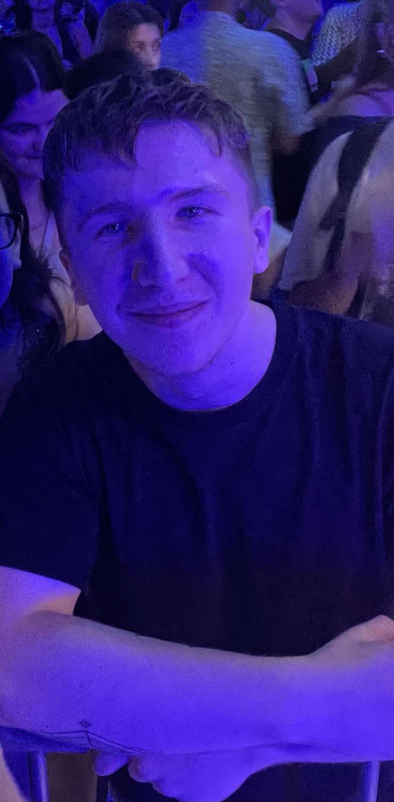

Hi, I'm Kovács Kevin
I’m a 22-year-old guy from Budapest, born on November 23, 2003, and currently a proud student at SZÁMALK-Szalézi Technical School.
Besides IT, I’ve become increasingly interested in psychology — I enjoy understanding how people think, and I use this in the stories and characters I create for my games.

About me
- Full name: Kovács Kevin
- Date of birth: November 23, 2003
- Location: Budapest, Hungary
- Currently: IT student at SZÁMALK-Szalézi Technical School
- Abroad experience: Lived for a short time in Lancashire, England
- Work: In 2023 I worked at Telekom installing routers and internet connections
Education
- Általános iskola: Móra Ferenc Általános Iskola
- Középiskola: Bethlenszki Bethlen Gábor Technikum, Budapest XV.
- Felsőfokú szakképzés: SZÁMALK-Szalézi Technikum
Languages and skills
Languages
- Hungarian: Native
- English: Fluent, with experience gained while living in England
IT skills
- Programming: Python-based game development, logic-focused tasks
- Game development: Designing point and click adventure games, storytelling, character and worldbuilding
- File architecting: Analyzing and modifying game file structures (HxD, Resource Hacker, JPEXS)
- Version control: Git and GitHub
- Networking / testing: Basic tasks through school projects
Hobbies
Gym
I enjoy going to the gym — it helps balance out the time I spend sitting in front of a computer.
Video games
One of my favourite games is Expedition 33; I really enjoy its atmosphere and worldbuilding.
In League of Legends I mainly play Janna, and in 2023 I reached world rank 1 Janna (based on the League of Graphs rankings).
The first game I ever played as a kid was Rexi kutya és a kalózok kincse, which pulled me into gaming.
Chess
I played chess competitively between ages 7 and 9. In 2022, when I was active on chess.com, my peak ELO was 1792.
What I'm looking for
I’m open to junior developer, QA or game development opportunities. I enjoy learning, experimenting, and working on projects where creativity and technical knowledge come together.